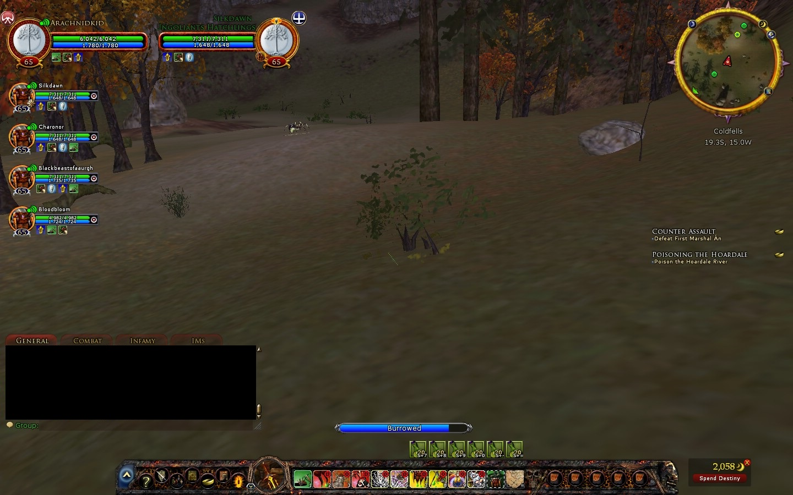
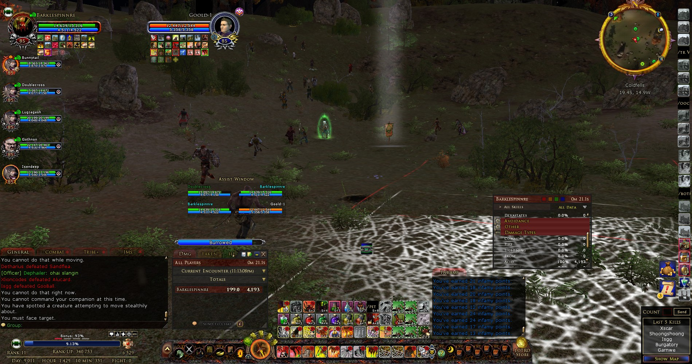

This is Barklespinnre
High Chieftain Barklespinnre Starhugger, Daughter of Katerspinnre and officer of Terminus Venatus Triumphus; Weaver class to the Army of Angmar (Creeps) in the Ettenmoors. Barklespinnre was my highest ranking character in LOTRO and the grand-daughter to Tyrant Evilspinnre Meledraniath, the Leader of The Witchkings Seventh Legion (TWKSL) tribe from Brandywine server. Having been a former officer of TWKSL, I ranked up Barklespinnre under the influence of Evilspinnre, one of the most skilled Weavers in LOTRO; Not to mention the best creepside raid leader I've ever seen. In my 10 years in LOTRO, the early days were occupied heavily by my attention to ranking Barklespinnre. As a Monster Player you start the game at level cap rather than having to continuously level up and gear out like the Freeps. The objective instead is to gain infamy for rank and slowly build your damage and defenses. At that time, once you managed to reach the 6th rank you were ready to take on almost any freep as a weaver one vs one. Ranking up meant getting the skills needed to defend oneself. If you made it to the 9th rank as a weaver, you were a force to be reckoned with. It was much more difficult to rank up in those times but If you stuck with it, you became a better player for it. My journey as a weaver was met with many mentors and spidery friends. This is Barklespinnre.
"Good things come to those who wait."
Beginnings
My time as Barklespinnre starts off at level 65 cap during the Siege of Mirkwood expansion under an all together different name. Back then I was known as Arachnidkid and I was a recruit within the Ungoliants Hatchlings tribe; A weaver exclusive group whose primary playstyle was ambushing. As a low ranking weaver your most important skill to aquire was titled Line in Wait; A 15 minute duration channel skill that allowed one to burrow into the ground, undetected by most, and remain out of harm's way until they moved (This skill later became a rank 6 reward). When it was first released in Shadows of Angmar, this skill would root anyone that walked over it. Like a fly landing on a web, the craft of ambushing was born. One such ambushing spider was named Silkdawn, a teacher to many young weavers of his time and a fine ambusher too. I began my training under Silkdawn from rank 0 onward; surpassing him in rank in the end. When it came to ambushing, we quickly learned that patience was the name of the game. As the skill's name suggests, we would form a group or raid of spiders and 'lie in wait' for enemy freeps to walk by. If you were too low in rank and didn't have the skill yet, you played bait for the rest of the colony. Because the weaver class was quite underpowered at that time, it was beneficial to stick together in a manner such as this. Traditionally we would cast our web of spiders across high traffic areas of the Ettenmoors. One such location in the Coldfells region famously became known as Silkdawn Valley on the Brandywine server. Sometimes many freeps would trickle in. Other times nothing would show for an entire 15 minute burrow. Silkdawn referred to this as the dry season. When freep prey finally did showed up, it was the leaders call on how it should be handled. Often we'd leave it to the lowest ranking weaver to pop from its burrow and take on the enemy one vs one. If they failed and were defeated, the next highest rank would have at it one after another until the freep was finished. On other occasions, all would rise at once picking multiple targets to attack. The weaver class in LOTRO is a master of crowd control and can easily manipulate multiple targets at once with abilities that slow and immobilize. The more ambushers we had and the higher ranked they were, the more freeps we could handle. If too many showed up, we simply stayed hidden in the ground and allowed them to ride by. Learning how to play the weaver class quickly became a necessity if you wanted to rank up while ambushing.
6 to 24-man PvMP | Ambushing
As I began my climb I found myself ambushing with the same usual suspects. There was Silaneth (Sil), a charismatic spider and Silkdawn's right hand. He would ultimately become the leader of many high ranked ambush groups; Bregnara (Breg), a quiet weaver and my competition when pushing to reach the latest rank; And finally there was Somestupidname (SSN), a veteran spider from the old days who made for great conversation and insights into the weaver class. Each became close friends of mine and allies within the creep community. The four of us spent a great deal of time in the valley ambushing for freeps, but when the action started to pick up and the enemies numbers outgrew our own, we had to turn to more weavers for help. Enter the spider raid, a 12-24 man raid of all weavers, each with the ability to burrow into the ground and remain hidden from sight. We would form spider raids to travel around the map taking on entire freep raids with focused attacks. One after another we'd utilize our crowd control capabilities to stop the freeps in their tracks and prevent them from both attacking or healing. We could even drain a targets power in seconds making them useless to their raids. We would clear out entire freep occupied keeps as a spider raid and burrow beneath its walls, unbeknownst to the those that would look to enter it for protection. Spider raids were the ultimate weapon against most any freep raid, and if we added healers to the mix, we were unstoppable.
Solo PvMP | Ambushing

Even into much higher ranks, ambushing became my desired method of gaining infamy points. There was something rewarding about playing with your opponent in a complex dance before defeating them. I could sit at a single point on the map (typically the Good Tol Ascarnen map in spot known as GTA) for hours on end waiting for a freep or more to cross my burrow. Not only was this a high traffic area but it also allowed me to call in help if I needed it. Maps in Monster Play allow you to teleport your character to various marked locations within the PvMP zone. My prime ambushing location just happened to land on one of them and with the help of the weaver skill Trapdoor Sanctuary (previously a rank 6 skill) I was able to burrow in the ground mid-combat and remain untouchable for 1 minute as I waited for reinforcements. This skill also became a full heal later in the game making it a vital part of the spider's arsenal.
The key to ambushing solo was to use as few long cooldown skills as possible. These are the skills that take a longer time to access between usages. The point of holding back like this was not only to become a better player and create a challenge for yourself but also act as a strategy incase more freeps decided to show up in the middle of a fight. You would need your big skills if you were taking on multiple freeps at once (one vs x). There were no rules as to who could attack you and when in the Ettenmoors. If you left the protection of your burrow, there was a chance that any freep you saw would attack. Equally as likely was the chance that a freep would try and run away from you once you started to gain ranks, so defeating your target fast was another important requirement of the ambushing spider. Over time you might locate yourself in one spot so often that freeps would pick up on your burrow patterns and know to either avoid you, or come looking for a fight. In the earlier days of LOTRO PvMP (level caps 50-85 or so) many players on both sides of the battle followed the etiquette that groups would not attack certain high ranking respected soloers such as myself. I could get away with fighting someone overtop my burrow and have an entire 24-man raid pass me without batting an eye. Small gestures such as that always made ambushing more enjoyable but it didn't last for long.
No breaks!
12 to 24-man PvMP | Raid vs Raid
My introduction to PvMP raiding began with the Stalker class at level 50 cap. This was the easiest way to get into a creep raid and earn infamy; Every group needed a scout or two. After learning the lay of the land and how Monster Play worked, I started to join raids. My objective was to find and then follow the main freep raid, reporting their location back to my raid leader in a detailed manner. This was to be done undetected as hunters had the ability to track and getting caught meant losing the element of surprise. After some time had passed while playing the role of raid scout I became recognized for my ability to gather intel and follow raid orders. I was extended an invitation to join the raiding tribe known as The Witchkings Seventh Legion lead by the weaver Evilspinnre. Evil was a prominent raid leader of the creeps therefore having the tribe tag of TWKSL was a free ticket into almost any creep raid, regardless of who lead it. At that time, I was rank 4 and he was rank 6. Fast forward some time and a few updates later, I now had a weaver of my own that I was ranking. As a joke, those of us in the tribe decided we were going to name our weavers after our dear leader himself. We'd often play games like this at his expense. And so the rest is history; Archnidkid received a rename and became Barklespinnre, just one more member of the Witchking's Seventh Legion Spinnre family. I left the Ungoliants Hatchlings and placed the remainder of my creeps under the leadership of Evil as I continued to rank up with the help of his raids and leadership. I worked my way up to an officer's position in the tribe and picked up a few pointers on raiding along the way.
6-man PvMP | Groups
The experiences I gained in LOTRO PvMP built up considerably over time. Many years later I broke off from TWKSL and joined those individuals who make up my freepside raiding kinship Shock and Awe. We joined up under the old creep tribe name Terminus Venatus Triumphas. This was the tribe of Bunnytail and the remnants of an elite group of creeps that once terrorized the server. As a member of TVT I would often roam the map in a small group or 6-man of highly experienced creeps. I used my knowledge from earlier days to help direct these groups. When you raid long enough you learn when to run, and when to push on the enemy, this could be strategically done in order to get your opponent to move where you want them to move. You learn how to flank and when it works best. When to fight open field versus when to find a choke point or close quarters. You learn how to spy on the enemy and when to call out for reinforcements. These groups proved to be the most exciting because they required better teamwork and more skill than larger raids. We'd often take on groups of greater numbers as well and our experience proved all the difference in the final outcome.
"1v1 Loser Deletes!"
Solo PvMP | 1v1 Circles
As the game received updates and the weaver class gained new and improved upgrades a different playstyle emerged.
It became more common to see spiders in raids or groups zerging down freeps by use of greater
numbers rather than playing solo or ambushing in one spot. With creeps becoming more powerful and the dynamic of the moors changing there was less of a
place for the soloing types. One vs one circles would form for those that wanted to test their abilities on another solo player.
These circles popped up all over the map but eventually the community of a server would
designate one spot for these types of battles. Whether or not a raid would run them over was another story. I often enjoyed sitting at a 1v1 circle
fighting anyone that chose to approach me. The idea was that these creeps and freeps would gather in one spot and only fight those who requested to
fight another. Unsolicited attacks were not welcome there. Being that I had become such a high ranking spider I was much more difficult to defeat now. However
rank in LOTRO did not equal skill. There were plenty of high ranking creeps and freeps that knew nothing about solo combat. This was something that needed
to be learned. While 1v1ing I found it more enjoyable to hold back using all of my skills. A style I picked up from my predecessor Evilspinnre. The whole
point was to challenge yourself and learn, not just win points. We would often discuss which skills should and should not be used depending on the classes
we fought against. Sometimes we'd even use as little as one or two skills to win against an opposing freep. This made all the difference in becoming a better weaver.
If you wanted to get really good and have an edge over your opponent, learning the skills and capabilities of other classes was equally important.
If you know the enemy and know yourself, you need not fear the result of a hundred battles. If you know yourself but not the enemy,
for every victory gained you will also suffer a defeat. If you know neither the enemy nor yourself, you will succumb in every battle.
― Sun Tzu, The Art of War
"Your burrow has timed out"
My final days as the weaver Barklespinnre ended at the rank of 13. Many years had passed and at some point I had given up on reaching the final
standing of Tyrant. For me the game was no longer about reaching this end goal but instead about honing my skills as a spider and enjoying the company around me.
However, the game had changed drastically since my time ambushing in Silkdawn valley. The LOTRO store was introduced to the game allowing creeps to buy their skills at
any rank, and the community became less about teamwork and more about farming for points. Rank meant nothing now except gaining more strength to overcome the freeps.
Organized raids became large masses of ungrouped enemies camping outside of one another's main base and the legends that lead those raids were relics of the past.
The 'action' as we called it was just not what it used to be. Eventually I found myself on a dead server with no real interest in transferring.
The community I had known was gone and so were the allies I had known as my tribe. These days are behind me now but will always be remembered along with the
important life lessons learned.
This story of LOTRO creepside is dedicated to the memory of TWKSL's fallen - Nidor, Nutty, and Somestupidname: May they rest in peace.